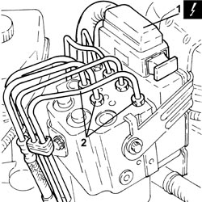
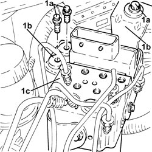
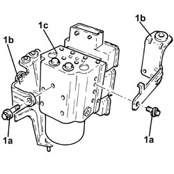
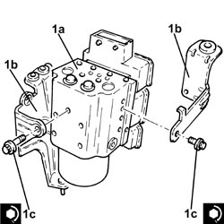
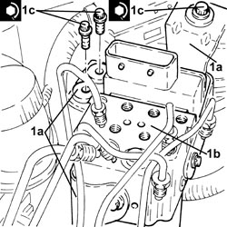
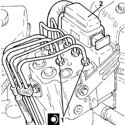

3340A12 ABS HYDRAULIC AND ELECTRONIC CONTROL UNIT - R.R.
- Path
- Procedures > 33 BRAKES > 3340 ANTI-LOCK BRAKING SYSTEM (ABS) > 3340A ABS CHECK/ADJUSTMENT DEVICES > 3340A12 ABS HYDRAULIC AND ELECTRONIC CONTROL UNIT - R.R.
- Kind
- repair procedure (removal / refitting; the operation number is the code)
- Applies to
- all engines; all production periods
- Interactive page
- https://sloeber94.github.io/elrnDB-fCrm/en/#/194000497
Applies to: all engines; all production periods
 Removing
Removing
 Refitting
RefittingOp. 5530B52 BATTERY SUPPORT/DRIP TRAY - R.R
- Replace the brake-clutch fluid reservoir plug using the tool.
Tool | Description | Function | Validity |
|---|---|---|---|
2000001400 | Plug | Brake/clutch fluid reservoir cap |
1. Disconnect the electrical connection from the ABS electronic and hydraulic control unit.
Description | Connector | |
|---|---|---|
1 | Braking system control unit (NFR) |
2. Mark the position, unscrew the connectors and disconnect the rigid pipes from the ABS hydraulic and electronic control unit.

Applies to: all engines; all production periods
1. Unscrew the bolts (1a) and remove the mounting brackets (1b) complete with the ABS hydraulic and electronic control unit (1c).

Applies to: all engines; all production periods
1. Working at the bench, unscrew the bolts (1a) and separate the mounting brackets (1b) from the ABS hydraulic and electronic control unit (1c).

Applies to: all engines; all production periods
Refitting
Removing1. Assemble the ABS electronic and hydraulic control unit (1a) to the mounting brackets (1b) and tighten the bolts (1c) to the recommended torque.
Component | Fastening | dia | Value (daNm) | Validity |
|---|---|---|---|---|
A.B.S. hydraulic and electronic control unit mounting brackets | Bolt | - | (control unit side) 0.85 - 1.05 |

Applies to: all engines; all production periods
1. Refit the mounting brackets (1a) complete with the ABS hydraulic and electronic control unit (1b) and secure by tightening bolts (1c) to the specified torque.
Component | Fastening | dia | Value (daNm) | Validity |
|---|---|---|---|---|
A.B.S. hydraulic and electronic control unit mounting brackets | Bolt | M8 | (bodyshell side) 1.7 - 2.3 |

Applies to: all engines; all production periods
1. Connect the rigid brake pipes to the ABS electronic and hydraulic control unit and tighten the connectors to the recommended torque.
Component | Fastening | dia | Value (daNm) | Validity |
|---|---|---|---|---|
Brake pipe connectors | Connector | M10/M12 | 1.4 ÷ 1.8 |
2. Connect the electrical connection to the ABS electronic and hydraulic control unit.

Applies to: all engines; all production periods
- Support the tool with the brake-clutch fluid reservoir plug.
Tool | Description | Function | Validity |
|---|---|---|---|
2000001400 | Plug | Brake/clutch fluid reservoir cap |
Op. 0010T64 BRAKE AND/OR CLUTCH FLUID CHECK LEVEL AND TOP UP AS NECESSARY
Op. 0010T65 HYDRAULIC BRAKE SYSTEM - BLEED AIR
Topics linked from this page (5)
- 0010T64 BRAKE AND/OR CLUTCH FLUID CHECK LEVEL AND TOP UP AS NECESSARY
- 0010T65 HYDRAULIC BRAKE SYSTEM - BLEED AIR
- 5530B10 BATTERY - R+R
- 5530B52 BATTERY SUPPORT/DRIP TRAY - R.R
- M051 BRAKING SYSTEM CONTROL UNIT (NFR)
Topics that link to this page (9)
- F001 POOR BRAKING ACTION
- F002 REAR WHEELS LOCK WHILST BRAKING
- F012 BRAKE PEDAL HARD
- H002 DRIFT WHILST BRAKING
- 3340AB SPEED SIGNAL CHECK
- 3340AB SPEED SIGNAL CHECK
- 3340A20 ABS ELECTRONIC CONTROL UNIT - R+R
- 3340B56 RIGID PIPE FROM HYDRAULIC CONTROL UNIT TO RIGHT FRONT BRAKE - R.R.
- 3340B62 RIGID PIPE (ONE), LEFT OR RIGHT, FROM HYDRAULIC CONTROL UNIT WITH PIPE CONNECTOR TO REAR BRAKES - R.R.